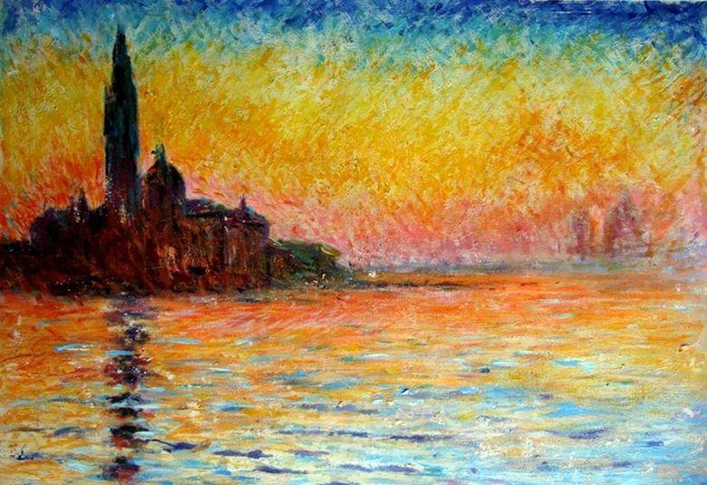
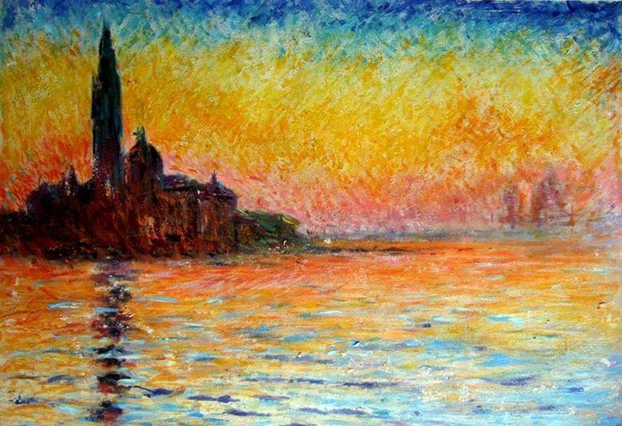

«Сан Джорджо Маджоре в сумерках»
 


Это одна из самых представительных картин живописца. Характеризуется оранжевыми тонами, с которыми художник воспринимал упадок итальянского города. Они выделяются: вода и собор Венеции. Художник сам отмечает, что эта картина отличается от других тем, что идея была настолько прекрасной, что работал в исступлении, следуя за солнцем и его отражениями в воде. Одной из важных техник Клода Моне была перспектива без глубины с планами, на которые повлияло его исследование японских пластинок, популярных во кругах французских художников. В своей работе Моне использует драматический тональный контраст, который устраняет промежуточные тона, под влиянием фотографии. Картина Клода Моне была взята непосредственно из окружающей среды и его отчаянного вдохновения. Поэтому он использует быструю технику для мгновенного захвата света и цвета короткими штрихами и загрузкой пасты. Использует чистые и сопоставленные цвета, с гибким ярким прикосновением, выделяющим его серию, где он повторяет ту же тему в разное время суток. В живописных методах Клода Моне были установлены принципы создания современной живописи. Поэтому его кисть стремилась обмениваться впечатлениями по ощущениям, а не захватывать историю или давать нравственную инструкцию зрителю. Это пейзаж импрессионистского стиля, с технологией масла с поддержкой холста. Он расположен в музее Бриджстоун в Токио. Это одна из самых представительных картин живописца. Несмотря на такой глубокий смысл картины, все же художник не стремится оказать давления на зрителя и позволяет насладится красками и игрой света. Приглушенные и в то же самое время кричащие в хорошем смысле слова оттенки позволяют картине слиться с закатом и наступлением темноты. Художник изобразил то, что пришло в это время в его голову, он не хотел изображать то, чего не чувствовал.